#2461 Duell im Morgengrauen
Alternativ: Gunman's Walk
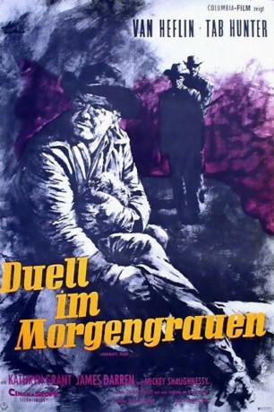 
 IMDB-Wertung: 7.0 / 10
IMDB-Wertung: 7.0 / 10  Metascore: 0
Metascore: 0 
Der Groß-Rancher und Pionier-Veteran Lee Hackett (Van Heflin) hat zwei Söhne, den rücksichtslosen Draufgänger Ed (Tab Hunter), der sein Lieblingssohn ist, und den jüngeren Davey (James Darren), den er ein bisschen zu sanft findet. Als Ed sich auf seine arrogante Art um die Gunst der Halbindianerin...
Jahr: 1958
Dauer: 97 Minuten
FSK: 12
Land: USA Studio: Columbia PicturesTonspuren: DD2.0 - ,
Untertitel:
Auflösung: 1080p (1920x752) Größe: 5928 MB
Genre: Western
Regisseur: Phil Karlson
Drehbuch: Frank S. Nugent, Ric Hardman
Soundtrack: George Duning
Darsteller:
- 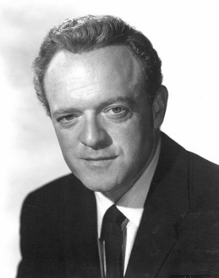 Van Heflin als Lee Hackett
- Tab Hunter als Ed Hackett
- Kathryn Grant als Clee Chouard
- James Darren als Davy Hackett
 Edward Platt als Purcell Avery
Edward Platt als Purcell Avery- 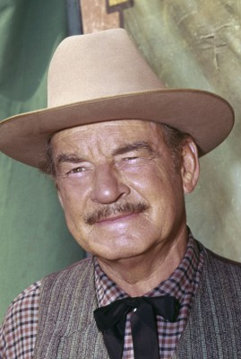 Ray Teal als Jensen Sieverts
- 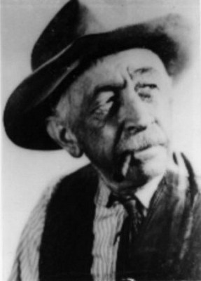 Will Wright als Judge
- Bert Convy als Paul Chouard , uncredited
- 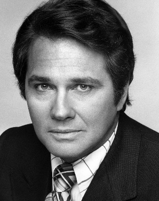 Brett Halsey als Wrangler , uncredited
- 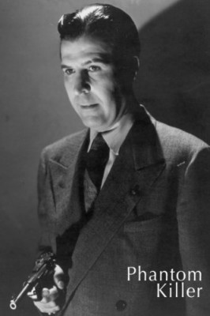 George J. Lewis als Cattleman , uncredited
- 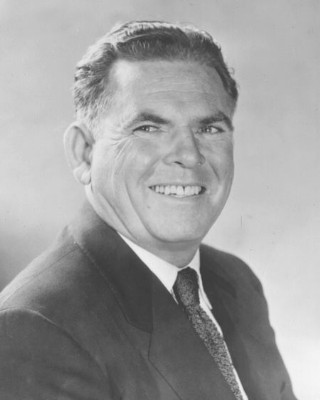 David McMahon als Cattleman , uncredited
 Mickey Shaughnessy als Deputy Sheriff Will Motely
Mickey Shaughnessy als Deputy Sheriff Will Motely- Robert F. Simon als Sheriff Harry Brill
 Paul Birch als Bob Selkirk
Paul Birch als Bob Selkirk- Michael Granger als Curly
- Harry Antrim als Doctor , uncredited
- Jack Barry als Wranger , uncredited
- 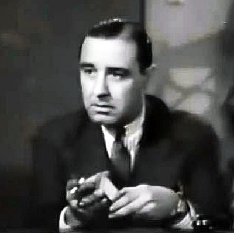 Paul Bryar als Bartender , uncredited
- 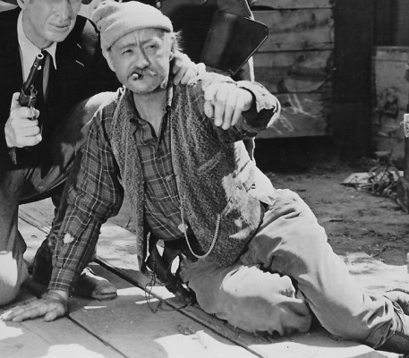 Paul E. Burns als Cook , uncredited
- Wayne Burson als Wrangler , uncredited
- Constance Cameron als Townswoman , uncredited
- Judy Cannon als Dance Hall Girl , uncredited
- John L. Cason als Wrangler , uncredited
- Wheaton Chambers als Townsman , uncredited
- Chief Blue Eagle als Black Horse , uncredited
- Watson Downs als Townsman , uncredited
- 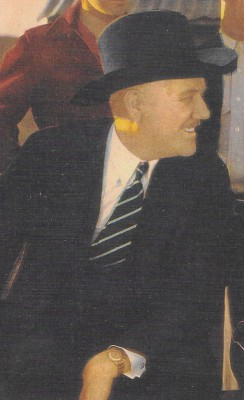 Sam Flint als Townsman , uncredited
- George Ford als Townsman , uncredited
- Everett Glass als The Reverend Arthur Stotheby , uncredited
 Herman Hack als Townsman , uncredited
Herman Hack als Townsman , uncredited- Joseph Hamilton als Storekeeper , uncredited
- Shirley Haven als Dance Hall Girl , uncredited
- Charles Heard als Townsman , uncredited
 Jack Kenny als Townsman , uncredited
Jack Kenny als Townsman , uncredited- Ann Kunde als Townswoman , uncredited
- Walt La Rue als Wrangler , uncredited
- Pierce Lyden als Townsman , uncredited
- Robert Malcolm als Cattleman , uncredited
- 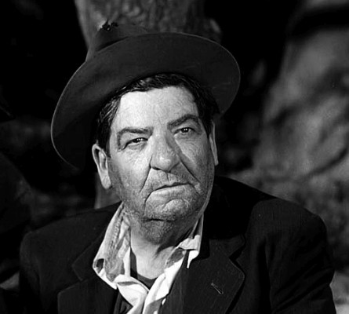 Frank Mills als Townsman , uncredited
- Ewing Mitchell als Mr. Johnson , uncredited
- Irving Mitchell als Cattleman , uncredited
- Bek Nelson als Dance Hall Girl , uncredited
- Allen Pinson als Wrangler , uncredited
- Alan Reynolds als Townsman , uncredited
- Hal Taggart als Townsman , uncredited
- Russell Thorson als Cattleman , uncredited
- Lucille Vance als Townswoman , uncredited
- Gloria Victor als Girl , uncredited
- Peggy Whitney als Dance Hall Girl , uncredited
Datei: X:\HD-Western-1900-1959\Duell im Morgengrauen (1958, FSK12, 1920x752).mkv seit 12.11.2015
Festplatte: HD Eastern+Western
 Es gibt insgesamt 98 Filme in der Gruppe 'HD-Western-1900-1959'
Es gibt insgesamt 98 Filme in der Gruppe 'HD-Western-1900-1959'